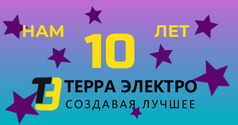

Дорогие друзья! В этом году нашей компании исполнилось ровно 10 лет со дня её основания.
С тех пор многое изменилось и в мире, и в стране, и в компании, но остались неизменными желание заниматься любимым делом и уверенность в том, что то, что мы делаем – делаем для улучшения качества жизни как внутри компании, так и за её пределами. Используя предыдущий накопленный опыт, с первого дня работы компании, мы занимались внешнеэкономической деятельностью.
Импорт из Европы и Азии, экспорт в страны СНГ и прежде всего ЕАЭС, позволил нам наработать надежные логистические каналы поставок, которые особенно актуальны в наши дни.
Благодаря квалификации наших специалистов, знанию и, что особенно важно, пониманию рынка электротехники России наша компания стала дистрибьютором в СНГ одного из крупнейших производителей электротехники в мире – компании General Electric по направлению Industrial Solutions.
Мы являлись и являемся партнерами ряда европейских производителей различного электротехнического оборудования от датчиков и кулачковых переключателей до высоковольтных электродвигателей и силовых распределительных трансформаторов. Все эти годы мы поставляем только качественное, проверенное нами в наших собственных проектах оборудование. Собственные проекты в области АСУ ТП, электропривода и распределения электроэнергии одно из основных направлений нашей компании. Имея проверенные каналы поставок, мы используем любые необходимые компоненты и не зависим от геополитических или внешнеэкономических ситуаций. Сейчас, в период санкций, мы продолжаем поставлять нашим партнерам и использовать в своих проектах оборудование и компоненты ведущих мировых производителей таких как SIEMENS, ABB, Schneider Electric и т.п.
В настоящий момент компания является надежным поставщиком электротехнического оборудования и технических решений для различных отраслей промышленности: металлургия, машиностроение, предприятия бумагоделательной отрасли – ЦБК и ЦБП, предприятия нефтегазового сектора – различные подразделения Газпрома, предприятия Росатома, предприятия ВПК, производители щитового оборудования для всех отраслей промышленности как внутри России так и далеко за её пределами (Индия, Иран, Турция), предприятия энергетического сектора ГЭС, ТЭЦ и многие другие. Мы активно сотрудничаем и участвуем в комплексных проектах с нашими партнёрами в России, Казахстане, Турции.
Ничего этого не было бы если бы не люди, люди, которые каждый день честно, ответственно и потому качественно делают свою работу. Благодаря людям наша компания является частью огромного рынка электротехники и энергетики огромной страны.
Впереди у нас большие планы по развитию нашей компании в области инжиниринга и производства компонентов и оборудования для АСУ ТП, электропривода и распределения электроэнергии.
Как генеральный директор и основатель компании я выражаю огромную признательность всем тем замечательным людям, которые на протяжении наших первых 10 лет были рядом и помогали делать одно большое хорошее дело – развивать рынок электротехники и энергетики России.
Спасибо вам большое!